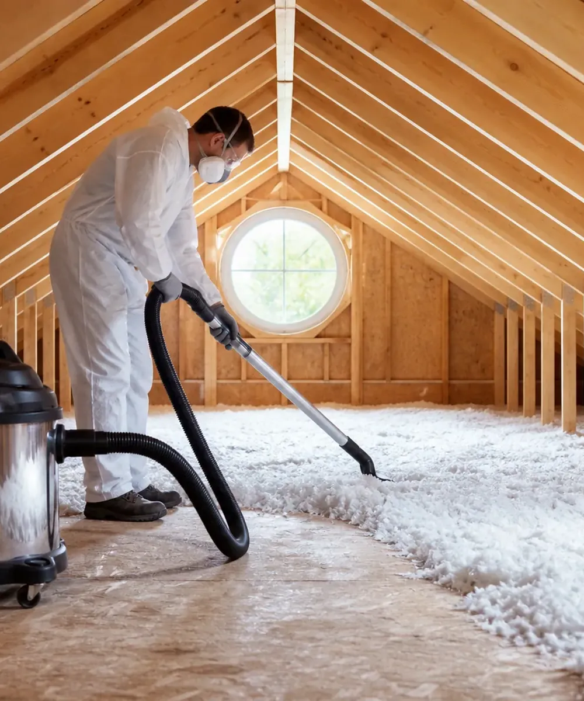
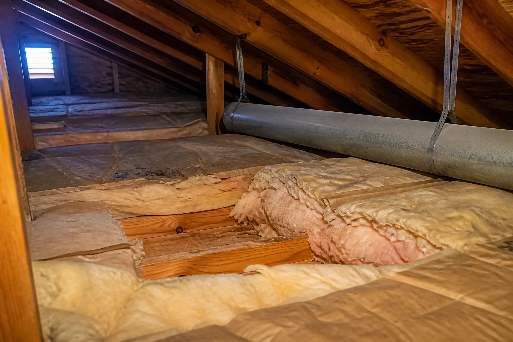

Review access and conditions
A provider may examine affected areas, safe access, ventilation and signs that point to an ongoing source.
Organize the concerns you have noticed. Wildlife Match may introduce the request to independent providers serving your area.
Describe the issue
Providers may first assess the attic conditions, access and source of the concern.
Cleanup decisions depend on access, the type and extent of affected material, moisture conditions and whether animal activity has been addressed.
A provider may examine affected areas, safe access, ventilation and signs that point to an ongoing source.
Ask how occupied areas will be protected and how debris, nesting material or damaged insulation may be handled.
Insulation, air sealing and moisture recommendations should follow an assessment rather than a blanket assumption.
Insulation, framing, ventilation, wiring and occupied rooms below all affect how cleanup may be approached. A useful assessment distinguishes visible debris from the materials and systems that surround it.

The hatch location, route through the home and occupied spaces below may shape protection, equipment placement and cleanup sequencing.
Material type, depth, compression, staining and the size of the affected area should be described before removal or replacement is proposed.
Blocked vents, roof leaks, condensation or bathroom exhaust discharge can resemble or compound wildlife-related conditions.
Before-and-after photographs, removed quantities, restored areas and unresolved observations make the completed scope easier to review.
Attic work can combine assessment, removal, cleaning and restoration. Each part should be described separately before work begins.
Confirm protection for occupied rooms, pathways, HVAC openings and belongings near the access point.
Ask how affected debris, insulation and nesting material will be identified, removed and disposed of.
Request a written description of the proposed cleaning approach without assuming sterilization or disease elimination.
Clarify measurements, replacement areas, ventilation concerns, photographs, follow-up and any warranty.
Cleanup and restoration scope should follow a provider’s assessment.
Ask about PPE, dust control and protection for occupied areas.
Confirm removal, disposal and cleaning-product details.
Ask how depth, condition and any replacement recommendation will be documented.
Confirm photographs, written scope, follow-up and any warranty.
Use the shared request form to organize the details for possible introduction to independent attic-cleanup providers.